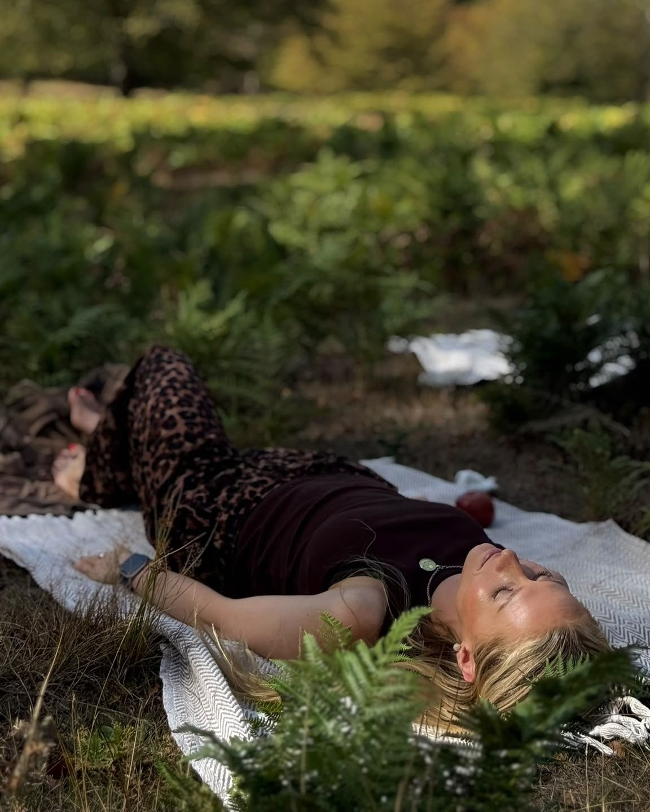

The same ending again
I used to ask myself every day: why me, and why like this? Maybe you know that question too.
The same person, just with a different name. The same heavy feeling on a Sunday evening. The same “I'll start again on Monday” that never really starts.
But not everything that happened twice is a pattern. Sometimes it really is just a hard season. So first, it's worth telling one from the other.
Try this now
Not why. Just what. It stays on your screen and is not sent anywhere.
1 of 3
Has the same ending happened at least three times?
With different people, jobs or places.
2 of 3
Did it feel familiar before it even started?
That feeling: “I already know how this ends.”
3 of 3
Did it happen again after you changed the person, the job or the city?
A different setting, the same ending.
Two or three yes
It's not bad luck. It's a pattern.
And the good news is that a pattern can be seen. Read on to see where it comes from.
A free 4-page PDF guide. It opens in Google Drive.
None or one yes
It may really be a hard season.
Be gentle with yourself, and don't look for blame where there is none.
A free 4-page PDF guide. It opens in Google Drive.
What actually repeats
When something keeps happening, it feels like fate. Or like something is wrong with you. It's neither. Maybe you already know a lot about yourself. You understand exactly why you do it. And you still do it.
That's because things don't repeat through knowing. They repeat through the choices you make, or don't make. And behind a choice there is almost always a state: guilt, fear, anger.
It doesn't mean you choose badly. You choose from a state you learned a long time ago, often as a child. That's why a new person or a new city brings the same ending.
Change doesn't come from changing the person or the city. It comes when you work through the state you choose from.
Think of the last time it happened. What was in you at the moment you chose?
Next time you feel it, just notice it. You don't need to change anything yet. It's enough to quietly say to yourself: “Oh, it's you again.”
Where the numbers come in
Numbers show the direction. The change comes through the state.
Numbers don't decide anything, and they don't write your fate. Numerology gives direction. Your date of birth shows which energies are strongest in you, and which state is worth looking at first.
But knowing is not enough. A free online calculator gives you a text that fits you and your brother too.

I'm Akvile Kuklyte
I work with numerology and with the states behind a pattern: guilt, fear, anger, feeling like a victim. I live in London and work in English and Lithuanian.
One word: PATTERN
If you answered “yes” at least twice and you want to look at your pattern together, send me this word. Wherever is easiest for you. I reply personally.
If it's not the time yet, that's okay. Get the full guide and keep it.